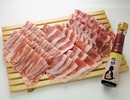

ec-neoイベント第２弾 BBQ写真館
降水確率７０％の中、１０月２２日（土）木場公園にてBBQを開催致しました！
準備中 その１
到着～
準備中 その２
カンパイ その１
カンパイ その２
カンパイ その３
カンパイ その４
カンパイ その５
カンパイ その６
カンパイ その７
カンパイ その８
談笑中 その１
談笑中 その２
談笑中 その３
談笑中 その４
談笑中 その５
談笑中 その６
談笑中 その７
談笑中 その８
ソーセージ グリル中
芋煮 あたため中
にぎにぎ、焼き焼き
おにぎり グリル中
【 備考 】
準備の途中でお通り雨が…。約３０分ほどで通り過ぎました。
大変申し訳ございません。JavaScriptを有効にして下さい。
【 BBQで飲食したec-neo食材 】
佐助豚 しゃぶしゃぶセット
佐助豚 肩ロースブロック
佐助豚 焼肉セット
佐助豚 粗挽きウィンナセット

四季彩菜白米
純米生もと造り まるト
蔵元焼酎 吟粒
Tradition
野菜につきましては、すべて宮城県産のものを使用しました。